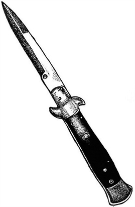

TRAHISON
L'Homme est un animal qui a trahi, l'Histoire est sa sanction." Emile CIORAN
Trahir vient de Tradere qui veut dire en latin livrer, faire passer. Trahir signifie par extension : abandonner, dénoncer, déserter. Retenons cette idée de passer d’un camp à un autre, assimilé rapidement à un camp ennemi. Car il y a bien une idée de passage qui ouvre sur un ailleurs antagoniste, il y a un déplacement, qui implique une rupture des alliances, une fracture dans l’ordre des appartenances, une brisure temporelle.
Le sentiment d’avoir été trahi ou la peur de trahir émergent souvent au cours des thérapies. La trahison est omniprésente dans l’histoire des individus, comme dans celle de l’humanité. Elle apparaît comme une des plus fidèles compagnes de l’homme, ce qui est tout de même un comble pour cette adepte de l’infidélité. Subie ou agie, avouée ou déniée, elle constitue une des expériences au monde les mieux partagées. Nul n’y échappe, ni la famille, ni la fratrie, ni le couple. On se trahit entre amis, entre collègues, entre Etats.
Pour qu'il y ait trahison, il faut un acte d'amour car la trahison fait partie intégrante de l'action d'aimer. Très souvent, la personne qui se sent trahie est envahie par la colère, qui est l'expression de son sentiment d'impuissance. Elle découvre brutalement qu'elle n'a aucune emprise, aucun pouvoir sur les sentiments de l'autre. Elle marque une impossibilité à pouvoir convaincre l'autre de continuer à l'aimer. Sans cela, sans amour, il ne peut pas y avoir de trahison mais qu'un changement d'opinion, de point de vue, d'objectif ou de direction. L'amour est le manifeste d'une part de nous déposée dans l'autre camp, la trahison, alors, nourrit l'inaccession à notre dépot et le souhait de se réunifier.
Bien souvent, on se trahit soi-même avant de trahir les autres. Est-ce que c'est l'autre qui nous trahi ou nous trahissons nous nous-mêmes ? C’est d’autant plus regrettable que les trahisons peuvent avoir des conséquences lourdes, on le sait voire pathologiques (dépression, suicide, trouble du comportement alimentaire, toxicomanie, sentiment de dévalorisation, etc.). Elles confrontent chacun à des pertes inexorables, à des deuils difficiles. Elles constituent, pour le moins une atteinte narcissique.
Pourquoi est-ce si difficile de la prendre en compte ? La trahison n’est pas un accident de la relation. C'est une volonté. Elle met en évidence ce moment particulier où le sens se perd, mais aussi où il peut se refonder autrement. Qu’est ce qui rend traître ? Qu’est ce qui pousse à trahir ? La trahison n’est peut-être qu’une réponse à une situation qui se présente comme une impasse.
La réflexion sur la trahison amène à prendre en compte l’hétérogénéité de l’être humain, à le situer dans sa globalité. C’est-à-dire à considérer l’homme comme sujet psychique, inscrit dans un corps, dans une sexualité, impliqué dans une famille mais aussi participant à une société, une culture, une religion, une idéologie, une sphère amicale, un milieu professionnel. Derrière le "Je", une multitude d’êtres se dissimulent. Nous existons dans une mosaïque de vécus. De chaque place où nous nous tenons, plusieurs identités campent en nous. Le sujet n’est pas un, il est pluriel et cette pluralité entraîne inévitablement des déchirements. Car toutes ces positions vécues en même temps génèrent inévitablement des conflits de valeurs, conflits de loyauté. Cette mosaïque porte en soi les stigmates de la trahison. Etre mère, suppose que l’on soit un peu moins fille. Etre femme, demande que l’on soit un peu moins mère. Il y a sans cesse des négociations intérieures, des renoncements inévitables. Notre équilibre intérieur nous amène sans cesse à des compromis avec nous-mêmes, voire des compromissions entre la tyrannie des idéaux, nos forces pulsionnelles, les contraintes de la réalité.
Le sentiment d’avoir été trahi ou la peur de trahir émergent souvent au cours des thérapies. La trahison est omniprésente dans l’histoire des individus, comme dans celle de l’humanité. Elle apparaît comme une des plus fidèles compagnes de l’homme, ce qui est tout de même un comble pour cette adepte de l’infidélité. Subie ou agie, avouée ou déniée, elle constitue une des expériences au monde les mieux partagées. Nul n’y échappe, ni la famille, ni la fratrie, ni le couple. On se trahit entre amis, entre collègues, entre Etats.
Pour qu'il y ait trahison, il faut un acte d'amour car la trahison fait partie intégrante de l'action d'aimer. Très souvent, la personne qui se sent trahie est envahie par la colère, qui est l'expression de son sentiment d'impuissance. Elle découvre brutalement qu'elle n'a aucune emprise, aucun pouvoir sur les sentiments de l'autre. Elle marque une impossibilité à pouvoir convaincre l'autre de continuer à l'aimer. Sans cela, sans amour, il ne peut pas y avoir de trahison mais qu'un changement d'opinion, de point de vue, d'objectif ou de direction. L'amour est le manifeste d'une part de nous déposée dans l'autre camp, la trahison, alors, nourrit l'inaccession à notre dépot et le souhait de se réunifier.
Bien souvent, on se trahit soi-même avant de trahir les autres. Est-ce que c'est l'autre qui nous trahi ou nous trahissons nous nous-mêmes ? C’est d’autant plus regrettable que les trahisons peuvent avoir des conséquences lourdes, on le sait voire pathologiques (dépression, suicide, trouble du comportement alimentaire, toxicomanie, sentiment de dévalorisation, etc.). Elles confrontent chacun à des pertes inexorables, à des deuils difficiles. Elles constituent, pour le moins une atteinte narcissique.
Pourquoi est-ce si difficile de la prendre en compte ? La trahison n’est pas un accident de la relation. C'est une volonté. Elle met en évidence ce moment particulier où le sens se perd, mais aussi où il peut se refonder autrement. Qu’est ce qui rend traître ? Qu’est ce qui pousse à trahir ? La trahison n’est peut-être qu’une réponse à une situation qui se présente comme une impasse.
La réflexion sur la trahison amène à prendre en compte l’hétérogénéité de l’être humain, à le situer dans sa globalité. C’est-à-dire à considérer l’homme comme sujet psychique, inscrit dans un corps, dans une sexualité, impliqué dans une famille mais aussi participant à une société, une culture, une religion, une idéologie, une sphère amicale, un milieu professionnel. Derrière le "Je", une multitude d’êtres se dissimulent. Nous existons dans une mosaïque de vécus. De chaque place où nous nous tenons, plusieurs identités campent en nous. Le sujet n’est pas un, il est pluriel et cette pluralité entraîne inévitablement des déchirements. Car toutes ces positions vécues en même temps génèrent inévitablement des conflits de valeurs, conflits de loyauté. Cette mosaïque porte en soi les stigmates de la trahison. Etre mère, suppose que l’on soit un peu moins fille. Etre femme, demande que l’on soit un peu moins mère. Il y a sans cesse des négociations intérieures, des renoncements inévitables. Notre équilibre intérieur nous amène sans cesse à des compromis avec nous-mêmes, voire des compromissions entre la tyrannie des idéaux, nos forces pulsionnelles, les contraintes de la réalité.

Il y a donc toujours une partie de soi qui se sent trahie par une autre. Cela constitue une blessure pour le sujet à la recherche de son unité constituante. La trahison à soi-même, ou plus exactement en soi-même, permet de mettre du jeu à ses différents "Je" et de vivre sur plusieurs registres.
Ce mouvement de traitrise n'est pas anodin. Peut-être la trahison terrorise-t-elle à ce point, parce que au fond, elle nous renvoie à une terrifiante responsabilité. Car être traître, ce n’est pas être lâche. La trahison nous met face à la responsabilité irrémissible qui nous lie aux autres, parce qu’elle révèle les conséquences imprévisibles de nos actes, bien au-delà de nos intentions et dont nous avons à répondre.
La trahison correspond au temps de la séparation, de la rupture, et qui représente un mouvement vers l’extérieur. Cette félonie devient ainsi un mouvement de réintégration, d’un nouvel emplacement, la reconnaissance d’une nouvelle légitimité. Le regard porté sur la trahison dépendra de la place d’où on se tient. On imagine bien que la personne abandonnée ne fera pas le même récit que celle qui sera rejointe ; elle n’aura pas le même regard sur celui qui opère le déplacement. Personne ne peut nommer et désigner de la même manière une trahison, personne n’éprouve la même trahison. Chacun n’en attrape qu’un bout, n’en vit qu’un aspect. La trahison renvoie à une réalité qui ne peut être appréhendée. Ainsi, il faut voir au travers de cette traîtrise, subit ou agit, un positionnement dans un contexte. Elle fait office de jalon spatio-temporel dans l'histoire du sujet.
La perception d'une trahison génère un choc qui galvanise le cerveau reptilien et déclenche une réaction primaire : la lutte, la fuite ou la paralysie. Certains restent simplement là, pétrifiés, d’autres n’ont qu’une hâte : débarrasser le plancher, avec l’espoir d’échapper à cette tourmente et d’avoir de nouveau l’impression de contrôler leur vie. Lorsque le système limbique ( cerveau des émotions) se met en branle, la survie à court terme prend le pas sur les décisions mûrement réfléchies. Si difficile que cela soit, dans de telles circonstances, il est recommandable pour les gens subissant la trahison de ne pas laisser les sentiments ressentis influencer leurs décisions. Trop souvent, leurs réactions impulsives, même si elles se veulent protectrices, peuvent détruire en un instant des années d'histoire de vie riches d’aspects positifs.
Ce mouvement de traitrise n'est pas anodin. Peut-être la trahison terrorise-t-elle à ce point, parce que au fond, elle nous renvoie à une terrifiante responsabilité. Car être traître, ce n’est pas être lâche. La trahison nous met face à la responsabilité irrémissible qui nous lie aux autres, parce qu’elle révèle les conséquences imprévisibles de nos actes, bien au-delà de nos intentions et dont nous avons à répondre.
La trahison correspond au temps de la séparation, de la rupture, et qui représente un mouvement vers l’extérieur. Cette félonie devient ainsi un mouvement de réintégration, d’un nouvel emplacement, la reconnaissance d’une nouvelle légitimité. Le regard porté sur la trahison dépendra de la place d’où on se tient. On imagine bien que la personne abandonnée ne fera pas le même récit que celle qui sera rejointe ; elle n’aura pas le même regard sur celui qui opère le déplacement. Personne ne peut nommer et désigner de la même manière une trahison, personne n’éprouve la même trahison. Chacun n’en attrape qu’un bout, n’en vit qu’un aspect. La trahison renvoie à une réalité qui ne peut être appréhendée. Ainsi, il faut voir au travers de cette traîtrise, subit ou agit, un positionnement dans un contexte. Elle fait office de jalon spatio-temporel dans l'histoire du sujet.
La perception d'une trahison génère un choc qui galvanise le cerveau reptilien et déclenche une réaction primaire : la lutte, la fuite ou la paralysie. Certains restent simplement là, pétrifiés, d’autres n’ont qu’une hâte : débarrasser le plancher, avec l’espoir d’échapper à cette tourmente et d’avoir de nouveau l’impression de contrôler leur vie. Lorsque le système limbique ( cerveau des émotions) se met en branle, la survie à court terme prend le pas sur les décisions mûrement réfléchies. Si difficile que cela soit, dans de telles circonstances, il est recommandable pour les gens subissant la trahison de ne pas laisser les sentiments ressentis influencer leurs décisions. Trop souvent, leurs réactions impulsives, même si elles se veulent protectrices, peuvent détruire en un instant des années d'histoire de vie riches d’aspects positifs.
EN RELATION
DUEIL

VALEUR


(NON) CHOIX
TRANSE GENERATION
REPARATION
LEGITIMITE
A-BANDON